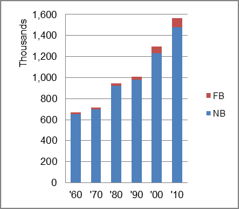
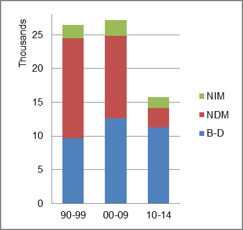
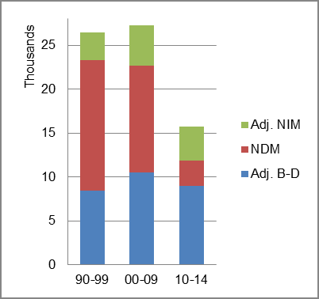

The foreign-born (FB) population increased from 15,542 in 1960 to 87,098 in 2010. That was an increase of 460.4 percent. The foreign-born share changed from 2.3 percent to 5.6 percent.
The share of the overall population that was native-born (NB) increased by 127.2 percent.
Idaho: Population 1960-2010 
The first chart below shows the three population change factors for three periods adjusted for annual average amounts. Domestic migration (NDM) was the largest factor adding population in the first period, and B-D in the latest two periods.
The second chart shows the same data but with an adjustment to reflect births to immigrants shifted to NIM. In it, the relative position of the three factors did not change.
Idaho: Sources of Population Change 1990-2013 Idaho: Sources of Population Change (Adjusted) 1990-2013  
B-D NDM NIM B-D NDM NIM 90-'99 36.4% 56.2% 7.4% 90-'99 32.5% 55.7% 11.4% 00-'09 46.4% 44.8% 8.8% 00-'09 39.9% 44.6% 15.3% 10-'13 80.6% 8.0% 11.4% 10-'13 65.7% 8.0% 26.2%